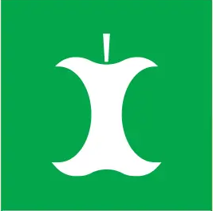
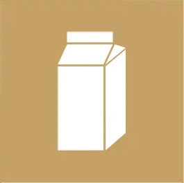
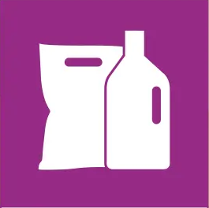
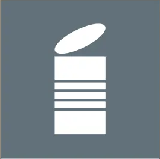

How to sort your waste in Sweden — Uppsala Vatten guide Så här sorterar du ditt avfall i Sverige — Uppsala Vattens guide

Examples:
Exempel:
Fruit & vegetable scraps, coffee grounds, food leftovers, eggshells, meat, fish.
Frukt- och grönsaksrester, kaffesump, matrester, äggskal, kött, fisk.
What happens:
Vad händer:
Becomes biogas and biofertilizer. The biogas powers buses!
Blir biogas och biogödsel. Biogasen driver bussar.
Remember:
Kom ihåg:
No plastic inside or around the bag. Fill only to the dotted line. Tie the bag closed.
Ingen plast i eller runt påsen. Fyll endast till den streckade linjen. Knyt påsen ordentligt.

Examples:
Exempel:
Milk cartons, juice cartons, egg cartons, cardboard packaging, paper pasta boxes.
Mjölkpaket, juiceförpackningar, äggkartonger, kartongförpackningar, pastakartonger.
What happens:
Vad händer:
Paper is recycled into new paper products.
Pappret återvinns till nya pappersprodukter.
Remember:
Kom ihåg:
Flatten cartons. Rinse liquid cartons before sorting.
Platta till förpackningarna. Skölj ur vätskekartonger innan sortering.

Examples:
Exempel:
Plastic bottles, ketchup bottles, shampoo bottles, plastic bags, chip packets, plastic film.
Plastflaskor, ketchupflaskor, schampoflaskor, plastpåsar, chipspåsar, plastfilm.
What happens:
Vad händer:
Plastic is recycled into new products like furniture or new plastic bags.
Plasten återvinns till nya produkter som möbler eller nya plastpåsar.
Remember:
Kom ihåg:
Empty and rinse containers. Flatten them. Put multiple small plastic bags inside one larger bag.
Töm och skölj förpackningarna. Platta till dem. Lägg flera små plastpåsar i en större påse.
Examples:
Exempel:
Newspapers, magazines, pocket books, envelopes, advertising leaflets, receipts.
Tidningar, tidskrifter, pocketböcker, kuvert, reklamblad, kvitton.
What happens:
Vad händer:
Paper is recycled into new paper.
Pappret återvinns till nytt papper.
Remember:
Kom ihåg:
Never mix newspapers with plastic. Keep paper dry.
Blanda aldrig tidningar med plast. Håll pappret torrt.

Examples:
Exempel:
Aluminium cans, tin cans, steel cans, tubes, metal caps and lids, aluminium foil.
Aluminiumburkar, konservburkar, stålburkar, tuber, metallock, aluminiumfolie.
What happens:
Vad händer:
Metal is infinitely recyclable and melted into new products.
Metall kan återvinnas hur många gånger som helst och smälts om till nya produkter.
Remember:
Kom ihåg:
Empty the container before sorting. Labels can remain.
Töm förpackningen innan sortering. Etiketter får sitta kvar.
Source:
Källa:
Uppsala Vatten Sorteringsguide
www.uppsalavatten.se/sorteringsguide